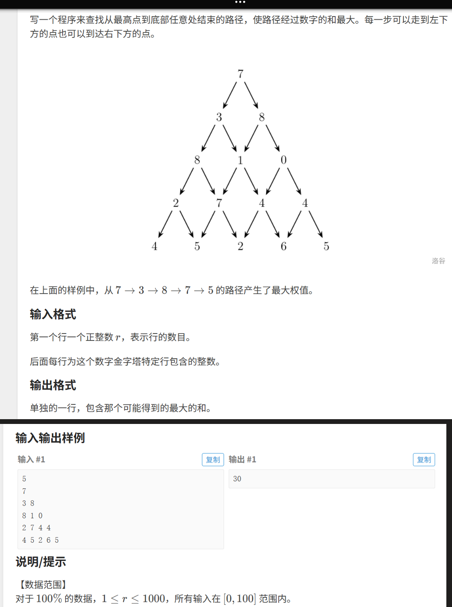

日期：2025-05-05
给定一个数字三角形，从顶部出发，每一步只能向左下或右下走，求走到最底层路径上数字和的最大值。

首先，这道题如果使用暴力枚举，那么假如层数很大，直接指数爆炸. 因此看每一步的选择，都由子问题组成，走到某个点只能来自他的上一层某两个点，会发现很多不一样的路径都会经过同一个点， 那么把每个点的最优值（到达每一行的最大值）存储下来，下次直接用存档，这种想法可以使用dp这种大问题拆成小问题的算法解决最值和方案数。 dp特征：最优子结构,无后效性,每一步的规则（状态）固定
#include <iostream>
#include <algorithm>
using namespace std;
const int MAXN=1005;
int a[MAXN][MAXN];//存原始三角塔
int dp[MAXN][MAXN];
int main(){
int r;
cin>>r;
for(int i=1;i<=r;i++){//读入每一行
for(int j=1;j<=i;j++){//第i行有i个数
cin>>a[i][j];
}
}
dp[1][1]=a[1][1];//初始化起点
for(int i=2;i<=r;i++){//处理边界
dp[i][1]=dp[i-1][1]+a[i][1];//每行最左的
dp[i][i]=dp[i-1][i-1]+a[i][i];//每行最右
}
for(int i=3;i<=r;i++){//开始有中间数值处理
for(int j=2;j<i;j++){
dp[i][j]=a[i][j]+max(dp[i-1][j-1],dp[i-1][j]);//存档+max
}
}
int result =0;
for(int j=1;j<=r;j++){//遍历最后一行，找最大值
result=max(result,dp[r][j]);
}
cout<<result<<endl;
return 0;
}#include <iostream>
#include <algorithm>
using namespace std;
const int MAXN=1005;
int a[MAXN][MAXN];
int dp[MAXN][MAXN];
int main()
{
int n;
cin>>n;
for(int i=1;i<=n;i++)
for(int j=1;j<=i;j++)
cin>>a[i][j];
for(int j=1;j<=n;j++)//初始化最后一行
dp[n][j]=a[n][j];
for(int i=n-1;i>=1;i--)//从下向上，无需考虑边界问题
for(int j=1;j<=i;j++)
dp[i][j]=a[i][j]+max(dp[i+1][j],dp[i+1][j+1]);
cout<<dp[1][1]<<endl;
return 0;
}给出升序的一个数组，找出其围绕中位旋转某次后的最小值
题目重点：无重复，升序，找最小值，考虑普通二分，但没有固定target，就做细节处变形
#include <iostream>
#include <vector>
using namespace std;
int main() {
ios::sync_with_stdio(false);//关闭同步，加速 cin/cout
cin.tie(nullptr);
int n;
cin >> n;
vector<int> nums(n);
for (int i = 0; i <n;++i){
cin >> nums[i];
}
int l=0, r = n-1;
while (l < r) {
int mid=l+(r-l)/2; //防溢出
if (nums[mid] > nums[r])//最小值在右
l = mid + 1;
else
r = mid;
}
cout << nums[l] << endl;
return 0;
}